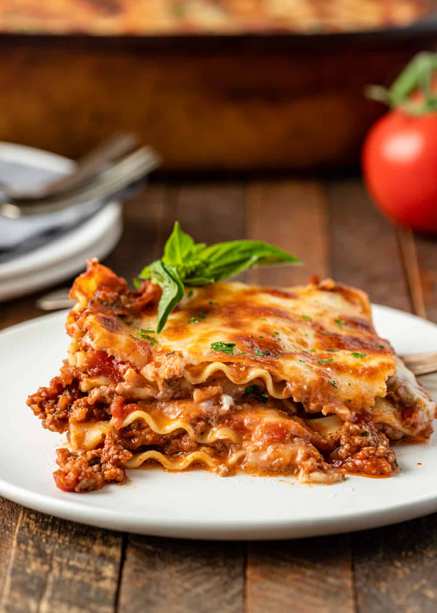

Lasagna Recipes

Prep: 30 mins
Cook: 2 hrs 30 mins
Additional: 15 mins
Total: 3 hrs 15 mins
Servings: 12
Yield: 12 servings
Ingredients:
- 1 pound sweet italian sausage
- 3/4 pound lean ground beef
- 1/2 cup minced onion
- 2 cloves garlic, crushed
- 1 (28 oz) can crushed tomatoes
- 2 (6 oz) cans tomato paste
- 1/2 cup water
- 2 tablespoons white sugar
- 1 ½ teaspoons dried basil leaves
- ½ teaspoon fennel seeds
- 1 teaspoon Italian seasoning
- 1 ½ teaspoons salt, divided, or to taste
- ¼ teaspoon ground black pepper
- 4 tablespoons chopped fresh parsley
- 12 lasagna noodles
- 16 ounces ricotta cheese
- 1 egg
- ¾ pound mozzarella cheese, sliced
- ¾ cup grated Parmesan cheese